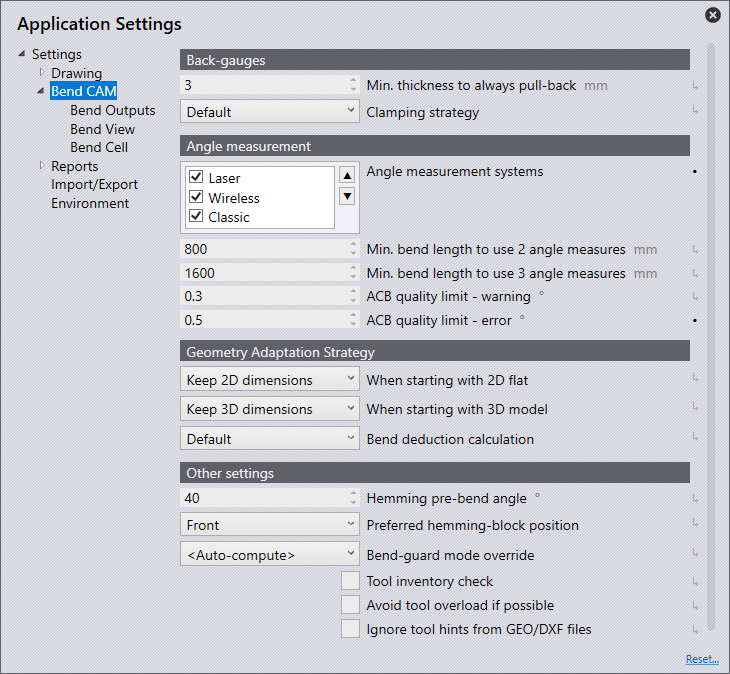

Ohýbání CAM

Zadní dorazy
Automatický zpětný pohyb od tloušťky plechu … mm - Toto nastavení umožňuje zadat hodnotu v mm automatického zpětného pohybu dorazových palců po dosažení zadané tloušťky plechu.
Strategie zadního dorazu - Slouží k nastavení způsobu zastavení dorazových palců na obrobku.
K dispozici jsou následující možnosti výběru:
Standard - Dorazové palce se zastaví u každého ohybu způsobem, který software považuje za nejvhodnější.
2 x rovný doraz - Rovné plochy obou dorazových palců se opírají o obrobek.
Upnutí+Zastavení - Jeden dorazový palec upíná obrobek a druhý dorazový palec jej zastavuje svou rovnou plochou.
Měření úhlu
Měření úhlu je pouze pro stroje Trumpf. Použití systémů na měření úhlů z řady Automaticky řízené ohýbání znamená, že i první kus ze série bude dokonalý. Senzory určují skutečný úhel společně s pružinou a vedou beran tak, aby dosáhl požadovaného úhlu. V této sekci lze zadat nastavení ACB na stroji.
Úhloměrný systém
Laser - Zaškrtněte tuto možnost, pokud je stroj vybaven ACB Laserem. ACB Laser je systém, ve kterém laser promítá čáru na plech a kamera detekuje úhel.
Bezdrátový - Tuto možnost zaškrtněte, pokud stroj používá ACB Wireless. ACB Wireless jsou dotykové kotouče integrované do horního nástroje.
Klasický - Tuto možnost zaškrtněte, pokud stroj používá ACB Classic.
2 měření úhlu od délky ohybu … mm - Tato možnost je minimální délka ohybu, u kterého je třeba provést dvě měření, aby byl zajištěn správný úhel během ohýbání. To může být mezi 50 > 4000 milimetrů.
3 měření úhlu od délky ohybu … mm - Tato možnost je minimální délka ohybu, u kterého je třeba provést tři měření, aby byl zajištěn správný úhel během ohýbání. To může být mezi 50 > 4000 milimetrů.
ACB laser v parkovací poloze (vyžaduje Restart!) - Toto je klidová poloha laserového senzoru.
Mez kvality ACB - výstraha - Toto je limit, který při měření dílu vygeneruje varování, například jako faktor odchylky. Pokud se nachází v konkrétním rozsahu, zobrazí se varování.
Mez kvality ACB - chyba - Toto je limit, který při měření dílu vygeneruje chybu, například jako faktor odchylky. Pokud se nachází v konkrétním rozsahu, vygeneruje chybu.
Strategie obrábění pro přizpůsobení obrobku
Pokud je v softwaru upraven 2D nebo 3D soubor, jsou zkontrolovány poloměry ohybu a faktor ohranění. V závislosti na tom, jaké strategie byly vybrány pro úpravu obrobku v nastavení Easy Programming, jsou prováděny různé strategie zpracování. Pokud bylo rozhodnutí nastaveno na interaktivní, zobrazí se dialogové okno Obrobek přizpůsobit.
Import zpracování
Interaktivní rozhodnutí - Při přechodu z 2D dílu do ohýbání se při použití tohoto nastavení automaticky zobrazí dialogové okno Obrobek přizpůsobit. To poskytne možnosti zachování velikosti plochy, zachování 3D rozměrů nebo nezměnění ničeho, což činí tuto funkci velmi interaktivní a uživatelsky orientovanou.
Zachovat 3D model - Tato možnost mění rozvinutí, které je pak nutné uložit ručně. Tato strategie se používá, pokud surový materiál ještě nebyl vyříznut.
Zachovat zpracování - Tato možnost znamená, že poloměr ohybu a faktor ohranění se přizpůsobí stávajícímu rozložení; linie ohybu zůstává na stejném místě. Tím se změní délka strany dílu. Rozvinutí se nemění. Tato strategie se používá, pokud je surový materiál již nařezán na požadovanou velikost.
Neprovádět přizpůsobení - Použití této možnosti znamená, že poloměr ohybu a faktor ohranění zůstanou nezměněny. Díl je zobrazen se správnými rozměry ve 3D, ale zobrazené poloměry ohybu neodpovídají skutečným poloměrům ohybu. Rozměr ohybu každého obrobku se může měnit.
Import 3D modelu
Interaktivní rozhodnutí - Při přechodu z 3D dílu do ohýbání se při použití tohoto nastavení automaticky zobrazí dialogové okno Obrobek přizpůsobit. To poskytne možnosti zachování velikosti plochy, zachování 3D rozměrů nebo nezměnění ničeho, což činí tuto funkci velmi interaktivní a uživatelsky orientovanou.
Zachovat 3D model - Tato možnost mění rozvinutí, které je pak nutné uložit ručně. Tato strategie se používá, pokud surový materiál ještě nebyl vyříznut.
Zachovat zpracování - Tato možnost znamená, že poloměr ohybu a faktor ohranění se přizpůsobí stávajícímu rozložení; linie ohybu zůstává na stejném místě. Tím se změní délka strany dílu. Tato strategie se používá, pokud je surový materiál již nařezán na požadovanou velikost.
Neprovádět přizpůsobení - Použití této možnosti znamená, že poloměr ohybu a faktor ohranění zůstanou nezměněny. Díl je zobrazen se správnými rozměry ve 3D, ale zobrazené poloměry ohybu neodpovídají skutečným poloměrům ohybu. Rozměr ohybu každého obrobku se může měnit.
Hodnota zkrácení - Tato možnost umožňuje vynutit použití metody faktor K. Toto nastavení lze provést v aplikaci Výchozí nastavení nebo jej lze upravit pro každý stroj zvlášť.
| U strojů jiných než Trumpf se vždy používají faktory K; výpočty ohybu Trumpf jsou k dispozici pouze pro ohraňovací lisy Trumpf. |
Varianta zadního dorazu vlevo - V závislosti na použité variantě BG bude NC program upraven tak, aby to zohlednil.
Varianta zadního dorazu vpravo - V závislosti na použité variantě BG bude NC program upraven tak, aby to zohlednil.
Další nastavení
Úhel předehnutí při falcování - Tato možnost umožňuje upravit úhel předehnutí lemu v rozmezí 10° až 60°. Výchozí hodnota je 40°, protože to je doporučený úhel předehnutí falcování pro většinu výrobců. Je nastavena na 30° pro všechny stroje Trumpf, ve všech různých edicích.
Přednastavení režimu BendGuard - Při nastavení na automatický výpočet (výchozí nastavení) ohyb vypočítá režim ochrany ohybu pro každý ohyb. Můžete však režim ochrany ohybu vynutit na jednu z možností, aby používal pouze tu, bez ohledu na to, zda je to vhodné nebo ne.
| Toto nastavení můžete také přepsat pro každý stroj, a to nastavením ve Výchozích nastaveních stroje místo Nastavení aplikace. |
Poloha stolu stroje - Toto nastavení má tři možnosti pro umístění stolu:
-
Odebráno
-
Dolů
-
Nahoru
Kontrola počtu kusů - Při zapnutí této volby se zobrazí segmenty nástroje, které mohou být potřebné pro ohýbání obrobku. Budou zobrazeny nedostatečné značky inventáře.
Dle možnosti zabránit přetížení nástroje - Zapnutím této možnosti se zajistí, že nedojde k přetížení nástroje. I když by na daném dílu mohl pracovat nástroj s vyšší prioritou, místo něj bude použit nástroj s nižší prioritou, aby se předešlo problémům s přetížením.
Ignorování nástrojů ze souboru geo/dxf - Při zapnutí této možnosti budou ignorovány všechny informace o tom, které nástroje mají být použity, nalezené v souboru DXF/GEO.